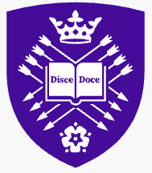

Yi Li
About Me
I am an MSc Cyber Security student at the University of Bristol and a BSc Computer Science graduate from the University of Sheffield. My current research focuses on long-term memory in LLM-based agent systems, particularly how memory is stored, retrieved, and utilized across multi-turn interactions, and how it influences reasoning and decision-making over time.
I am especially interested in understanding memory as a structured and evolving knowledge component, where interactions between memory, retrieval, and reasoning affect the overall behaviour of LLM-based agents. My work explores memory lifecycle mechanisms and their impact on the reliability and performance of agent systems.
I have research and engineering experience in entity alignment, recommendation systems, sentiment analysis, computer vision, and LLM-based intelligent services. During my internship at China Telecom, I worked on collaborative filtering and LLM-powered recommendation services for customer service scenarios.
News
Education
- Expected to be First-Class Honours.

University of Sheffield- Upper Second-Class Honours.
- Specialisation: Artificial Intelligence and Machine Learning.
- Core modules: Deep Learning, Computer Vision, Natural Language Processing.
Research Experience
- Investigating security risks in long-term memory systems of LLM-based agents, including memory poisoning, retrieval manipulation, and cross-turn propagation.
- Proposing a lifecycle-based defence framework covering memory writing, retrieval, validation, reasoning, and feedback loops.
- Designing experiments on agent benchmarks such as MEXTRA and AgentPoison to evaluate malicious memory influence on long-horizon behaviour.
- Developing modular defence components for memory validation, consistency checking, and safer memory retrieval.
- Studied memory mechanisms in RNNs, focusing on gradients and attractors for long-term memory.
- Designed tasks on short-term reproduction, long-term association, and attractor simulation.
- Proposed an Euler Sine Analysis method to visualise attractor dynamics in seq2seq models.
- Analysed attraction basins and loss-gradient patterns to explain long-dependency challenges.
Selected Publications
Internship
- Built collaborative filtering-based recommendation models from user behaviour data for a customer service platform.
- Designed LLM-powered recommendation services for contextual understanding of chat records, improving response relevance and satisfaction.
- Analysed large-scale interaction logs to identify behavioural patterns and optimise recommendation accuracy.
- Worked with cross-functional teams to integrate the recommendation engine into existing service infrastructure.
Projects
- Implemented a binary sentiment classification system for movie reviews using a Naive Bayes classifier.
- Applied TF-IDF feature extraction to strengthen feature representation and improve model performance.
- Optimised the model pipeline, increasing accuracy and macro-averaged F1 score on sentiment tasks.
- Compared Harris corner detection, SIFT, and ORB feature detection methods.
- Implemented an image stitching algorithm based on SIFT- and ORB-based feature matching.
- Designed and developed a graphical user interface integrating all system functionalities.
Technical Skills
Certifications
PADI Junior Open Water Diver — Level 1